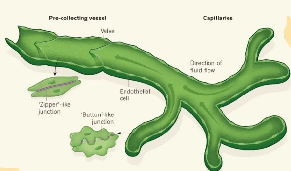
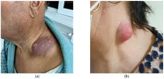
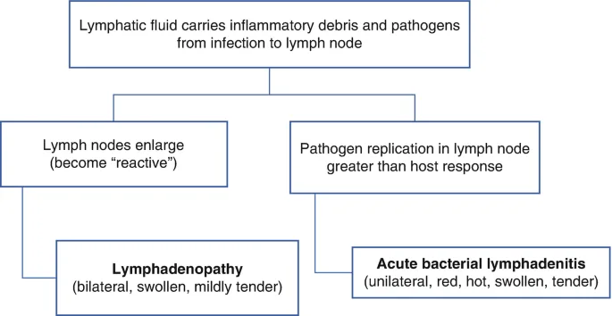
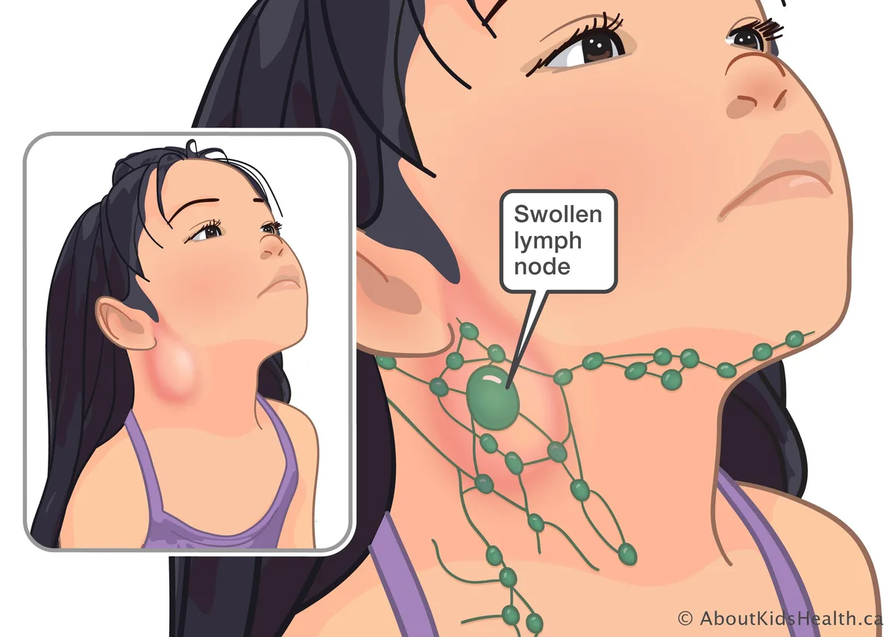

Expanded Nursing Uganda Explanation
Lymphadenitis should be understood beyond a short definition. Link the concept to patient history, focused assessment, common risks, nursing priorities, documentation and evaluation of outcomes.
01 Overview
Lymphadenitis is a relatively common condition that refers specifically to the inflammation of one or more lymph nodes. It is characterized by enlargement, tenderness, and often hardening of the affected nodes.
While commonly associated with infection, it's important to remember that not all lymphadenopathy (enlarged lymph nodes) is lymphadenitis.
- Inflammation: The hallmark of lymphadenitis is an inflammatory response within the lymph node(s). This is typically a reaction to a foreign substance (like bacteria, viruses, or toxins) or cellular debris that has been filtered from the lymph fluid.
- Enlargement (Lymphadenopathy): The affected lymph nodes become noticeably swollen due to the influx of immune cells, fluid, and often pus within the node.
- Tenderness: Inflamed lymph nodes are typically painful or tender to the touch, distinguishing them from many benign forms of lymphadenopathy.
- Location: Lymphadenitis can occur in any lymph node group, but it is most commonly observed in superficial nodes such as the cervical (neck), axillary (armpit), and inguinal (groin) regions, as these are palpable and often drain areas prone to infection.
To fully understand lymphadenitis, it's helpful to differentiate it from other terms related to the lymphatic system:
- Condition Definition Distinction
- Lymphadenopathy This is a broader term that simply means enlarged lymph nodes . All lymphadenitis involves lymphadenopathy, but not all lymphadenopathy is lymphadenitis. Lymph nodes can be enlarged for various reasons (e.g., metastatic cancer, lymphoma, autoimmune diseases, benign reactive hyperplasia) without being acutely inflamed or tender. Lymphadenitis specifically implies inflammation.
- Lymphangitis As we discussed, lymphangitis is the inflammation of the lymphatic vessels (the "pipelines" that carry lymph fluid). It is typically seen as red streaks extending from an infection site towards the regional lymph nodes. Lymphangitis affects the vessels, while lymphadenitis affects the nodes. They often occur concurrently because an infection traveling through the lymphatic vessels (lymphangitis) will typically lead to inflammation of the draining lymph nodes (lymphadenitis). However, one can occur without the other (e.g., isolated lymphadenitis from a local infection without visible streaking, or lymphangitis with only mild nodal involvement).
- Lymphedema This is a chronic swelling (edema) caused by a malfunction or damage to the lymphatic system , resulting in the accumulation of protein-rich fluid in the interstitial space. It's a condition of impaired lymphatic drainage. Lymphadenitis is an acute inflammatory process of the nodes, while lymphedema is a chronic condition of fluid accumulation due to impaired lymphatic transport. Recurrent episodes of lymphadenitis (and lymphangitis) can contribute to the development or worsening of lymphedema due to damage to the lymphatic structures.
- Lymphadenitis = Inflamed lymph nodes (often enlarged and tender).
- Lymphadenopathy = Enlarged lymph nodes (can be inflamed, or due to other causes).
- Lymphangitis = Inflamed lymphatic vessels (often seen as red streaks).
- Lymphedema = Chronic swelling from impaired lymphatic drainage.
Lymphadenitis is a key indicator that the body's immune system is responding to an antigen or insult, usually an infection, within the area drained by the affected lymph node(s).
The lymph nodes swell and become inflamed as they filter pathogens and immune cells from the lymph fluid draining from an infected area.
These are the most frequent cause of acute lymphadenitis, particularly in children.
- Pyogenic Bacteria (Pus-forming): Staphylococcus aureus and Streptococcus pyogenes (Group A Strep): These are the predominant causes. They typically originate from skin infections (e.g., cellulitis, impetigo, infected wounds, abscesses) or pharyngitis (strep throat).
- Location: Often cause cervical lymphadenitis (from head/neck infections) or axillary/inguinal lymphadenitis (from limb/trunk infections).
- Atypical Mycobacteria: Mycobacterium avium complex (MAC) and Mycobacterium scrofulaceum : Can cause chronic, non-tender (initially), often unilateral cervical lymphadenitis, especially in immunocompetent children. Often referred to as scrofula when affecting the neck.
- Cat Scratch Disease ( Bartonella henselae ): Transmission: From a scratch, bite, or lick from an infected cat/kitten.
- Presentation: Leads to tender, often significantly enlarged regional lymph nodes (usually axillary or cervical) weeks after exposure, sometimes with a primary skin lesion at the scratch site.
- Tuberculosis ( Mycobacterium tuberculosis ): Presentation: Can cause chronic lymphadenitis (tuberculous lymphadenitis or scrofula), particularly in the cervical region, often firm, matted, and sometimes draining. More common in immunocompromised individuals or those from endemic areas.
- Tularemia ( Francisella tularensis ): Transmission: From contact with infected animals (rabbits, rodents) or insect bites.
- Presentation: Causes painful, often suppurative (pus-forming) regional lymphadenitis, typically axillary or inguinal, associated with an ulcer at the site of entry.
- Plague ( Yersinia pestis ): Transmission: Flea bites from infected rodents.
- Presentation: Causes acutely painful, massively swollen and tender lymph nodes (buboes), often in the groin or armpit, in bubonic plague. Rare.
- Sexually Transmitted Infections (STIs): Chlamydia trachomatis (Lymphogranuloma Venereum - LGV): Causes inguinal lymphadenitis, often painful and suppurative.
- Syphilis (Treponema pallidum) : Can cause generalized lymphadenopathy, but primary syphilis may have regional lymphadenitis.
- Chancroid (Haemophilus ducreyi) : Causes painful genital ulcers with associated tender inguinal lymphadenitis.
Often cause generalized lymphadenopathy, but can present with prominent regional lymphadenitis.
- Infectious Mononucleosis (Epstein-Barr Virus - EBV): Presentation: Classic cause of generalized lymphadenopathy, but often with prominent, tender posterior cervical lymph nodes, along with fatigue, sore throat, and fever.
- Cytomegalovirus (CMV): Similar to EBV, can cause mononucleosis-like syndrome with lymphadenopathy.
- HIV (Human Immunodeficiency Virus): Presentation: Acute HIV infection (seroconversion illness) often presents with generalized lymphadenopathy. Persistent generalized lymphadenopathy (PGL) is a common finding in later stages.
- Adenovirus: Common cause of viral pharyngitis with cervical lymphadenitis, especially in children.
- Herpes Simplex Virus (HSV): Primary genital herpes can cause tender inguinal lymphadenitis. Oral herpes can cause submandibular lymphadenitis.
- Rubella (German Measles) and Measles: Cause characteristic rashes with associated lymphadenopathy.
- Varicella-Zoster Virus (Chickenpox/Shingles): Can cause regional lymphadenitis draining the lesions.
Less common, usually in immunocompromised individuals or specific geographic regions.
- Histoplasmosis, Coccidioidomycosis, Blastomycosis: Systemic fungal infections can cause regional or generalized lymphadenopathy.
- Toxoplasmosis ( Toxoplasma gondii ): Transmission: From undercooked meat or cat feces.
- Presentation: Often causes mild, asymptomatic cervical lymphadenopathy, but can be tender.
- Filariasis: ( Wuchereria bancrofti, Brugia malayi ): Tropical infection transmitted by mosquitoes, leading to chronic lymphatic obstruction and lymphadenitis.
- Leishmaniasis: Can cause regional lymphadenopathy depending on the form of the disease.
While infections are primary, other conditions can also cause lymphadenitis or lymphadenopathy that may be mistaken for it.
- Systemic Lupus Erythematosus (SLE), Rheumatoid Arthritis: Can cause generalized lymphadenopathy, which may be tender, mimicking an inflammatory process.
- Kawasaki Disease: Causes prominent unilateral cervical lymphadenopathy, often in children.
- Lymphoma (Hodgkin's and Non-Hodgkin's): Causes enlarged lymph nodes that are typically non-tender and firm/rubbery. However, rapid growth or necrosis can cause tenderness.
- Leukemia: Can cause generalized lymphadenopathy.
- Metastatic Cancer: Cancer cells spread from a primary tumor to regional lymph nodes, causing them to enlarge. These are typically firm, non-tender, and fixed.
- Certain medications (e.g., phenytoin, allopurinol) can cause drug-induced lymphadenopathy.
- A systemic inflammatory disease that can cause generalized lymphadenopathy.
These factors increase an individual's susceptibility to developing lymphadenitis.
- Compromised Skin Barrier: Skin lesions: Cuts, scrapes, insect bites, blisters, burns, rashes (e.g., eczema, psoriasis), fungal infections (e.g., tinea pedis). These provide entry points for pathogens.
- Poor hygiene: Can increase bacterial colonization.
- Immunocompromised States: HIV/AIDS: Weakened immune system makes individuals more susceptible to opportunistic infections.
- Diabetes Mellitus: Impaired immune function and circulation.
- Corticosteroid use, chemotherapy, organ transplant recipients: Suppressed immune responses.
- Elderly and very young: Often have less robust immune systems.
- Proximity to Infection: Any local infection (e.g., dental abscess, strep throat, otitis media, cellulitis, infected wound) will cause lymphadenitis in the draining lymph nodes.
- Geographic Exposure: Travel to areas endemic for certain infections (e.g., tuberculosis, filariasis, fungal infections).
- Animal Exposure: Pet cats (Cat Scratch Disease), wild animals (tularemia).
- Intravenous Drug Use: Increased risk of skin and soft tissue infections.
Lymph nodes are critical components of the immune system, acting as filters for lymph fluid and as command centers for immune responses. When an infection or inflammatory process occurs in the body, the regional lymph nodes draining that area become activated, leading to lymphadenitis.
- Lymph Production and Flow: Interstitial fluid from tissues is collected by lymphatic capillaries, forming lymph. This lymph, containing waste products, proteins, and sometimes pathogens or antigens, travels through increasingly larger lymphatic vessels.
- Afferent Lymphatic Vessels: Lymphatic vessels eventually converge and carry lymph into the lymph nodes via afferent lymphatic vessels.
- Antigen/Pathogen Entry: If an infection or inflammation is present in the tissue drained by a particular lymph node, pathogens (bacteria, viruses, fungi, parasites) or foreign antigens (e.g., from a wound, tumor cells) will be carried into the lymph node.
Upon entry of pathogens or antigens, a cascade of immune events is triggered:
- Antigen Presentation: As lymph flows through the lymph node's subcapsular sinus, the pathogens/antigens encounter resident immune cells, primarily macrophages and dendritic cells (APCs - Antigen-Presenting Cells) .
- These APCs engulf the pathogens, process their antigens, and then present these antigens on their cell surface to T lymphocytes in the paracortex of the lymph node.
- Lymphocyte Activation and Proliferation: T-lymphocytes (T-cells): When naive T-cells recognize their specific antigen presented by an APC, they become activated. Activated T-cells proliferate rapidly (clonal expansion) and differentiate into effector T-cells (e.g., helper T-cells, cytotoxic T-cells) and memory T-cells.
- B-lymphocytes (B-cells): B-cells in the cortical follicles of the lymph node also recognize specific antigens. With help from activated T-helper cells, B-cells proliferate, differentiate into plasma cells, and begin producing antibodies specific to the invading pathogen. This proliferation leads to the formation of germinal centers within the follicles.
- Influx of Other Immune Cells: The inflammatory response within the lymph node triggers the release of cytokines and chemokines . These chemical messengers attract other inflammatory cells, such as neutrophils (especially in bacterial infections), monocytes, and additional lymphocytes, from the bloodstream into the lymph node.
The intense cellular activity and fluid shifts within the lymph node manifest as the clinical signs of lymphadenitis:
- Enlargement (Lymphadenopathy): Cellular Proliferation: The rapid multiplication of T and B lymphocytes (clonal expansion) and the influx of other immune cells dramatically increase the number of cells within the lymph node, leading to its swelling.
- Edema: Increased vascular permeability (a hallmark of inflammation) within the lymph node allows more fluid to leak from blood vessels into the tissue spaces of the node, contributing to swelling.
- Inflammatory Exudate: In severe bacterial infections, there may be an accumulation of pus (a collection of dead neutrophils, bacteria, and tissue debris) within the lymph node, further contributing to its enlargement and potentially leading to abscess formation.
- Tenderness/Pain: Capsular Stretching: The rapid increase in size stretches the fibrous capsule surrounding the lymph node. This stretching activates pain receptors within the capsule.
- Inflammatory Mediators: The release of inflammatory mediators (e.g., bradykinin, prostaglandins, histamine) directly stimulates nerve endings within the lymph node, causing pain.
- Warmth and Redness: Increased Blood Flow (Hyperemia): Inflammatory mediators cause local vasodilation and increased blood flow to the lymph node, leading to warmth and sometimes redness of the overlying skin.
- Resolution: If the immune response is successful, the pathogens are cleared, the inflammatory process subsides, and the lymph node gradually returns to its normal size. Memory lymphocytes remain, ready for a faster response to future encounters with the same pathogen.
- Complication (Suppuration/Abscess): If the bacterial infection is overwhelming or untreated, the intense inflammatory response, particularly with pyogenic bacteria, can lead to the formation of an abscess (a localized collection of pus) within the lymph node, requiring drainage.
- Chronic Lymphadenitis: Persistent low-grade inflammation or an ongoing immune challenge can lead to chronic lymphadenitis, where the nodes remain enlarged and often firm due to fibrous tissue deposition. This can be seen in conditions like tuberculosis or some fungal infections.
The clinical manifestations of lymphadenitis are primarily characterized by local signs at the affected lymph node(s) and often accompanied by systemic symptoms, especially if the underlying cause is a widespread infection.
These are the most direct signs of inflammation in the lymph node itself.
- Enlarged Lymph Nodes (Lymphadenopathy): Size: Varies from slightly palpable to several centimeters in diameter.
- Consistency: Acute Bacterial: Often firm, but may become softer or fluctuant if an abscess forms.
- Chronic (e.g., TB, Atypical Mycobacteria): May be firm to rubbery.
- Malignancy: Typically firm, rubbery, or hard and non-tender.
- Mobility: Acute Infection: Usually mobile within the surrounding tissue.
- Chronic/Malignancy: May become fixed or matted together.
- Number: Can be solitary, multiple, or involve several adjacent nodes.
- Tenderness/Pain: A cardinal sign of acute lymphadenitis. The nodes are painful to touch and often spontaneously painful.
- Abscess formation: Pain often intensifies.
- Chronic conditions (e.g., atypical mycobacteria, malignancy): May be non-tender or only mildly tender initially.
- Warmth and Redness (Erythema): The skin overlying the inflamed lymph node may feel warm to the touch and appear red. This indicates significant superficial inflammation, often seen with acute bacterial infections.
- Edema/Swelling: The surrounding tissue may also become swollen due to local inflammation and impaired lymphatic drainage.
- Skin Changes (overlying the node): Acute: Skin may be taut, shiny, and erythematous.
- Chronic/Suppurative: May develop thinning of the skin, discoloration (purplish), and eventually spontaneous drainage if an abscess ruptures.
- Fistula formation: With chronic infections like TB or atypical mycobacteria, the node may drain spontaneously, forming a sinus tract (fistula) to the skin surface.
- Primary Infection Site: Often, there will be a visible source of infection in the area drained by the affected lymph node. This could be a cut, scrape, insect bite, cellulitis, dental infection, pharyngitis, or otitis media.
- Example: Cervical lymphadenitis may be associated with a sore throat, ear infection, or scalp lesion. Inguinal lymphadenitis may be linked to a foot infection or an STI.
These symptoms indicate a more widespread inflammatory response or a systemic infection.
- Fever and Chills: Common with acute bacterial lymphadenitis or significant viral infections (e.g., infectious mononucleosis).
- High fever can signal bacteremia or severe infection.
- Malaise and Fatigue: Generalized feeling of unwellness, common with many infections.
- Anorexia: Loss of appetite, particularly in children with severe infections.
- Headache and Myalgia: General aches and pains, typical of systemic inflammatory responses.
- Night Sweats and Weight Loss: These are more characteristic of chronic infections (e.g., tuberculosis, atypical mycobacteria, HIV) or malignancies (e.g., lymphoma).
- Associated Symptoms of Primary Infection: Pharyngitis: Sore throat, difficulty swallowing (with cervical lymphadenitis).
- Otitis Media: Earache (with cervical lymphadenitis).
- Skin Infection: Redness, warmth, swelling at a distant site.
- Mononucleosis: Extreme fatigue, sore throat, splenomegaly (enlarged spleen).
- HIV: Rash, arthralgia, oral candidiasis.
- Acute Bacterial (Staph/Strep): Rapid onset, very tender, warm, red, often with fever. Can quickly become fluctuant (abscess). Example: Child with an infected cut on the finger develops painful, red, tender axillary lymphadenitis, often with fever.
- Cat Scratch Disease: Subacute onset, often very large, tender, sometimes mildly warm nodes, weeks after cat exposure. May be purplish and spontaneously drain. Example: Teenager develops a single, large (3-4 cm) tender node in the armpit 2 weeks after getting scratched by a kitten.
- Atypical Mycobacterial: Chronic, slowly enlarging, usually non-tender initially, often in the neck. Can be firm, eventually become discolored (purplish) and form a draining fistula. Typically in children.
- Tuberculosis: Chronic, firm, matted, often non-tender nodes, especially in the neck. May rupture and drain. Systemic symptoms like night sweats and weight loss are possible.
- Viral (e.g., EBV/Mono): Generalized lymphadenopathy, but often very prominent, tender, posterior cervical nodes. Accompanied by significant fatigue, sore throat, and fever.
- Malignancy (e.g., Lymphoma): Often firm, rubbery, non-tender, fixed nodes. Systemic "B symptoms" (fever, night sweats, weight loss) may be present.
- Cervical Lymphadenitis (Neck): Most common. Associated with infections of the scalp, face, ears, mouth, teeth, pharynx, or upper respiratory tract. Can interfere with neck movement.
- Axillary Lymphadenitis (Armpit): Associated with infections of the arm, hand, chest wall, or breast.
- Inguinal Lymphadenitis (Groin): Associated with infections of the legs, feet, lower abdominal wall, buttocks, or sexually transmitted infections.
- Generalized Lymphadenopathy: Enlargement of nodes in two or more non-contiguous regions. Suggests a systemic disease (e.g., mononucleosis, HIV, systemic lupus, leukemia, lymphoma).
This is the cornerstone of diagnosis and helps narrow down the differential diagnosis significantly.
The goal is to elicit information about the onset, characteristics, and associated symptoms, as well as potential exposures.
- Onset and Duration: Acute (days to weeks): Suggests acute infection (bacterial, viral).
- Chronic (weeks to months): Suggests atypical mycobacteria, TB, fungal, toxoplasmosis, malignancy, or certain autoimmune diseases.
- Characteristics of the Swelling: Pain/Tenderness: Acute inflammation (e.g., bacterial) is usually painful. Non-tender nodes raise suspicion for malignancy or chronic causes.
- Growth Pattern: Rapid growth vs. slow, insidious enlargement.
- Associated Symptoms: Systemic: Fever, chills, malaise, fatigue, night sweats, weight loss (suggestive of systemic infection, TB, malignancy, HIV).
- Local: Sore throat, dental pain, skin lesion/wound, earache (to identify potential source of infection).
- Rash, joint pain: Suggests viral infection or autoimmune disease.
- Exposures: Animal contact: Cat scratch (Cat Scratch Disease), tick/insect bites (Lyme disease, tularemia), rodent exposure (tularemia, plague).
- Travel history: Exposure to endemic infections (e.g., fungal, parasitic).
- Recent infections/illnesses: URI, skin infections, STIs.
- Medication history: Certain drugs can cause lymphadenopathy.
- Social history: IV drug use, sexual history (HIV, STIs).
- Immunocompromise: HIV, diabetes, chronic illnesses, immunosuppressant medications.
A comprehensive examination is crucial, focusing on the affected lymph nodes and the areas they drain.
- Palpation of Lymph Nodes: Location: Identify involved node groups (cervical, axillary, inguinal, supraclavicular, epitrochlear).
- Size: Measure in centimeters.
- Consistency: Soft, firm, rubbery, hard. Soft/Fluctuant: Suggests pus (abscess).
- Rubbery: Often seen in lymphoma.
- Hard/Stony: Often suggests metastatic cancer.
- Tenderness: Acute inflammation causes tenderness.
- Mobility: Mobile or fixed to surrounding tissues. Fixed nodes raise concern for malignancy or chronic inflammation.
- Matting: Multiple nodes fused together. Suggests TB, sarcoidosis, or malignancy.
- Inspection of Overlying Skin: Redness, warmth, swelling, presence of discharge, sinus tracts/fistulas.
- Search for Primary Source of Infection: Head and Neck: Inspect scalp, ears, pharynx, tonsils, teeth, gums.
- Upper Extremities: Inspect hands, arms, chest wall.
- Lower Extremities: Inspect feet, legs, perineum, genitals.
- Generalized: Look for rashes, other skin lesions.
- Systemic Examination: Vital Signs: Temperature (fever), heart rate.
- General Appearance: Malaise, toxicity.
- Other Lymph Node Chains: Palpate all major lymph node groups to determine if it's localized or generalized lymphadenopathy.
- Liver and Spleen: Palpate for hepatosplenomegaly (suggests systemic infection, malignancy).
These tests help identify the causative agent and assess the severity of the inflammatory response.
- Complete Blood Count (CBC) with Differential: Leukocytosis (high WBC count): Suggests bacterial infection.
- Lymphocytosis/Atypical Lymphocytes: Suggests viral infections (e.g., EBV, CMV).
- Eosinophilia: Suggests parasitic infections or allergic reactions.
- Anemia, Thrombocytopenia: Can be seen in systemic infections or hematologic malignancies.
- Inflammatory Markers: Erythrocyte Sedimentation Rate (ESR) & C-Reactive Protein (CRP): Elevated in inflammatory conditions, can monitor response to treatment.
- Specific Serology/Cultures: Throat swab: For Streptococcus pyogenes (if pharyngitis is suspected).
- Blood cultures: If patient is febrile or appears toxic (to rule out bacteremia).
- Viral serology: For EBV, CMV, HIV (if suspected).
- Toxoplasmosis serology: If exposure history or clinical suspicion.
- Bartonella henselae serology: For Cat Scratch Disease.
- PPD skin test (Tuberculin Skin Test) or IGRA (Interferon-Gamma Release Assay): For Tuberculosis.
- STI screening: For Chlamydia, Syphilis, Chancroid (if inguinal lymphadenitis and risk factors).
- Bacterial Culture from Node Aspiration/Biopsy: If suppuration is suspected, aspiration of fluid for Gram stain and culture can identify bacterial pathogens and guide antibiotic therapy.
- Atypical mycobacterial culture: Requires specific media.
Imaging is often used to assess the extent of nodal involvement, rule out abscess, or guide aspiration/biopsy.
- Ultrasound (US): First-line imaging for superficial nodes.
- Can differentiate between solid lymphadenitis, abscess formation (fluctuant, anechoic/hypoechoic collection), and cystic lesions.
- Can guide needle aspiration.
- Assess vascularity (hypervascularity in inflammation).
- Computed Tomography (CT) Scan: Useful for assessing deeper lymph nodes (e.g., mediastinal, abdominal, retroperitoneal) or if ultrasound is inconclusive.
- Can show extent of inflammation, involvement of surrounding structures, and signs of malignancy.
- With contrast, can highlight abnormal vascularity.
- Magnetic Resonance Imaging (MRI): Provides excellent soft tissue detail, useful in complex cases or to evaluate neurovascular compromise. Less commonly used for initial diagnosis of uncomplicated lymphadenitis.
- Chest X-ray: May be indicated if systemic symptoms or suspicion of pulmonary TB, sarcoidosis, or malignancy.
This is considered the definitive diagnostic tool when the diagnosis remains unclear despite thorough clinical and laboratory assessment, or when malignancy is strongly suspected.
- Fine Needle Aspiration (FNA): Less invasive. Collects cells for cytology (malignancy) and microbiology (Gram stain, culture, acid-fast bacilli stain).
- Can be guided by ultrasound.
- Excisional Biopsy: Removal of the entire lymph node.
- Provides the most comprehensive tissue for histopathology (to assess architecture, cellular changes, presence of granulomas, atypical cells, malignancy) and microbiology.
- Often indicated for persistent, unexplained lymphadenopathy or strong suspicion of malignancy, TB, or atypical mycobacterial infection.
Management goals of lymphadenitis are primarily directed at treating the underlying cause, alleviating symptoms, and preventing complications.
These measures are beneficial regardless of the specific cause and aim to reduce discomfort and promote healing.
- Rest: Rest for the affected body part or general rest for the patient can help reduce inflammation and pain.
- Pain and Fever Management: Analgesics/Antipyretics: Over-the-counter medications like acetaminophen (Tylenol) or non-steroidal anti-inflammatory drugs (NSAIDs) such as ibuprofen (Advil, Motrin) can reduce pain, inflammation, and fever.
- Local Heat/Cold Application: Warm Compresses: Often recommended as they can improve blood flow, reduce swelling, and provide comfort, particularly for bacterial causes.
- Cold Packs: May be used initially to reduce swelling and pain, especially if very acutely inflamed.
- Elevation: Elevating the affected limb (if applicable) can help reduce swelling by promoting lymphatic and venous drainage.
- Hydration: Ensuring adequate fluid intake, especially if fever is present.
Treatment is tailored once the etiology is known or strongly suspected.
This is the most common specific treatment.
- Empiric Therapy: Often initiated after cultures are taken but before results are back, based on the most likely pathogens.
- Common choices: Penicillinase-resistant penicillins (e.g., dicloxacillin) or first-generation cephalosporins (e.g., cephalexin) are frequently used, as Staphylococcus aureus and Streptococcus pyogenes are the most common causes.
- For suspected MRSA: Consider clindamycin, trimethoprim-sulfamethoxazole (Bactrim), or doxycycline, depending on local resistance patterns and severity.
- Duration: Typically 7-14 days, but can be longer for more severe or chronic infections.
- Culture-Directed Therapy: Once culture and sensitivity results are available, antibiotics should be adjusted to target the specific organism.
- Specific Bacterial Infections: Cat Scratch Disease: Often self-limiting, but azithromycin may be used to shorten the course or for severe cases.
- Atypical Mycobacteria: Requires long-term multi-drug therapy (e.g., clarithromycin, rifampin, ethambutol) for several months. Often managed by infectious disease specialists.
- Tuberculosis: Requires multi-drug anti-tuberculous therapy for 6-9 months (e.g., isoniazid, rifampin, pyrazinamide, ethambutol).
- STIs: Specific antibiotics depending on the pathogen (e.g., ceftriaxone for gonorrhea, doxycycline for chlamydia/syphilis).
- Most viral lymphadenitis (e.g., EBV, CMV, adenovirus) is self-limiting and does not require specific antiviral medications.
- HSV: Antivirals like acyclovir may be used for severe primary infections causing regional lymphadenitis.
- HIV: Antiretroviral therapy (ART) is crucial for managing HIV infection and associated lymphadenopathy.
- Fungal: Specific antifungals (e.g., fluconazole, itraconazole, amphotericin B) are used for systemic fungal infections causing lymphadenitis, guided by culture.
- Parasitic: Antiparasitic medications (e.g., pyrimethamine/sulfadiazine for toxoplasmosis) are used as appropriate.
- Autoimmune Diseases: Managed with immunomodulators or corticosteroids by rheumatologists.
- Malignancy: Treatment depends on the type and stage of cancer (e.g., chemotherapy, radiation, surgery). This often involves oncologists.
If a lymph node becomes fluctuant (meaning it contains pus), drainage is necessary.
- Needle Aspiration: Often performed under ultrasound guidance. A needle is inserted to withdraw pus.
- Less invasive than incision and drainage.
- Can provide material for Gram stain and culture.
- May be repeated if pus reaccumulates.
02 Nursing Uganda Clinical Lens
Use Lymphadenitis as a practical nursing topic, not only a memorized definition. Start with normal structure and function, then connect it to assessment findings and disease.
- What to understand first: define lymphadenitis, identify the normal or expected pattern, then explain what changes when the patient is unwell.
- Why it matters in care: the nurse must recognize risk early, explain findings clearly, document accurately and know when to escalate.
- How to revise it: connect each point to assessment, nursing diagnosis or care problem, intervention, rationale and evaluation.
03 Assessment Guide
- Relevant inspection, palpation, movement, auscultation, vital signs or neurological checks.
- Normal findings, abnormal findings and what each abnormality may indicate.
- Patient history, risk factors and how the body system affects other systems.
04 Nursing Priorities, Rationales and Outcomes
- Use anatomy to explain symptoms and guide focused assessment.
- Recognize findings that need urgent escalation.
- Teach the patient using simple body-system language.
The rationale for these priorities is patient safety: nursing actions should prevent deterioration, reduce discomfort, support recovery and create clear evidence for the next caregiver.
- Expected outcome: The learner can explain normal function, identify abnormal signs and connect them to nursing action.
05 Patient Teaching and Revision Check
- Explain lymphadenitis in simple language the patient or caregiver can repeat back.
- Teach warning signs, medicine or follow-up instructions, hygiene or lifestyle points where relevant.
- For exams, prepare a short answer using: definition, causes or risk factors, signs, assessment, management, complications and prevention.
- For ward practice, document baseline findings, actions taken, patient response and the plan for review.
Illustrations and Diagrams (4)




Related Video Lectures
Watch nursing lecture videos on YouTube for this topic. Opens in a new tab.
Watch on YouTubeExternal link: YouTube may use its own cookies and terms. Nursing Uganda is not affiliated with YouTube.